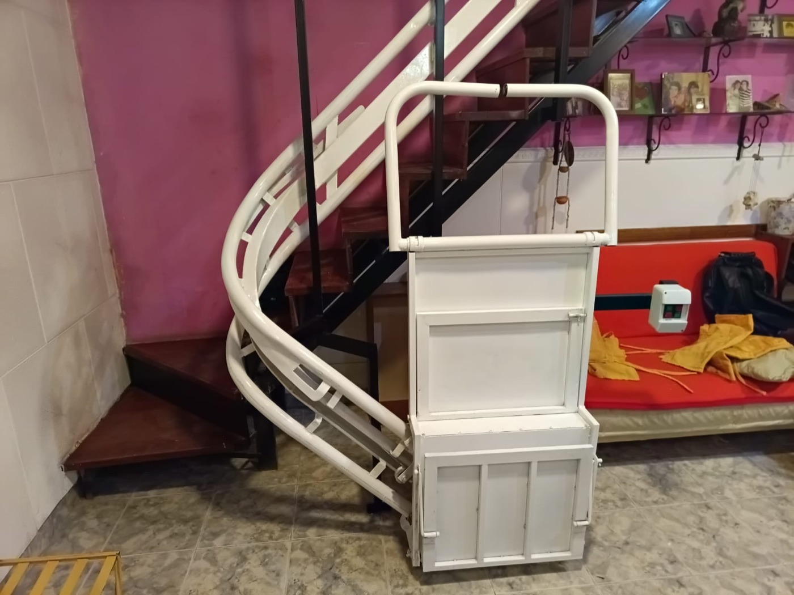

Tramo único
Salvaescaleras recto
Para escaleras que van de un piso al otro sin ninguna curva. Es la opción más simple y rápida de instalar.
- Instalación ágil
- Menor complejidad de fabricación
- Ideal para casas y departamentos

Con giros y descansos
Salvaescaleras curvo
Para escaleras con curvas, caracol o descansos. El riel se hace a medida, siguiendo el recorrido exacto de tu escalera, como el de la foto.
- Hecho a medida de cada escalera
- Resuelve escaleras que parecían imposibles
- Con silla o plataforma
Patios, entradas y terrazas
Salvaescaleras para exterior
Para escaleras al aire libre: la entrada de la casa, el patio o la terraza. Está preparado para aguantar la lluvia, la humedad y el sol.
- Pensado para el clima
- Accesos sin barreras a la vivienda
- Con plataforma para sillas de ruedas
¿Cuánto sale? Depende de tu escalera
No hay un precio único: cambia según si la escalera es recta o curva, cuántos escalones tiene, si es adentro o afuera y si va con silla o plataforma. Por eso lo mejor es que nos mandes los datos y te pasamos un presupuesto claro.
Para pasarte el presupuesto necesitamos:
- Una foto de la escalera (de abajo hacia arriba).
- Cantidad aproximada de escalones y si es interior o exterior.
- Si el usuario puede sentarse o usa silla de ruedas.
- Tu zona, para coordinar la visita técnica.
Preguntas frecuentes
¿Cómo sé si mi escalera es recta o curva?
Si va de un nivel al otro en línea, sin giros, es recta. Si tiene curvas, tramos con giro, caracol o descansos intermedios, es curva. Mandanos una foto y te lo confirmamos.
¿Un salvaescaleras curvo es más caro que uno recto?
Generalmente sí, porque el riel se fabrica a medida de cada curva. Por eso cotizamos cada caso en particular.
¿Puedo instalar un salvaescaleras en una escalera exterior?
Sí. Hay equipos preparados para exterior, con tratamientos y protecciones frente a lluvia, sol y humedad.
¿Qué datos necesito para pedir presupuesto?
Una foto de la escalera, la cantidad aproximada de escalones, si es interior o exterior y si el usuario puede sentarse o usa silla de ruedas.